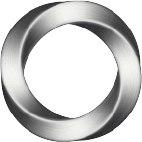
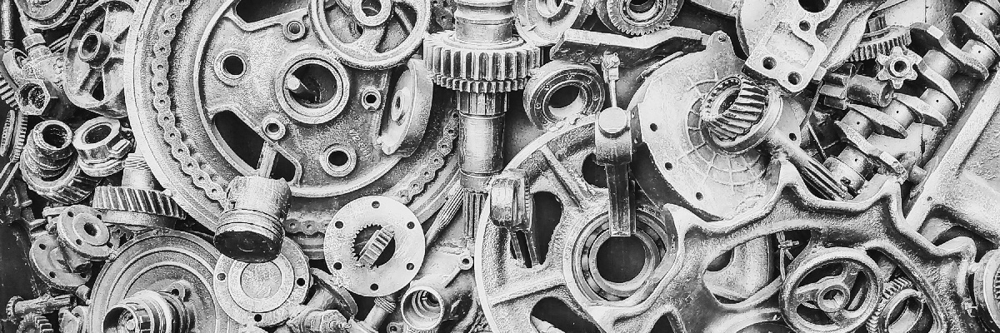

Stainless Hill: Data in Steel
Latest Developments
EUR 4 billion seed for sustainable steel planted in Finland
On November 10, 2023, significant developments in the Finnish steel industry were reported, focusing mainly on sustainability and innovation. The Norwegian company Blastr Green Steel announced plans to establish a €4 billion green steel plant with an integrated hydrogen production facility in Inkoo, Finland (source). This project, one of the largest industrial investments in Finland, is expected to create up to 1,200 jobs once operational (source). The plant aims to produce two and a half million tons of hot and cold-rolled green steel annually, a form of steel manufactured without fossil fuels (source).
Reliability ⓘ
10
Peab joins SSAB to launch first building with fossil-free steel
Peab, a Nordic community builder, has collaborated with SSAB, Ruukki Construction, and Wihlborgs to launch the world's first building with fossil-free steel in Lund, Sweden, near Finland. Parts of this building were manufactured using fossil-free steel produced by Ruukki Construction in Finland, marking a significant step towards sustainable construction practices (source).
Reliability ⓘ
7
Outokumpu Financial Performance
The company's adjusted earnings before interest, taxes, depreciation, and amortization (EBITDA) fell 83% to 51 million euros in the July-September period, which was below the forecast. However, CEO Heikki Malinen indicated that the negative trend seemed to have bottomed out, with some positive signals, although a market recovery would take time (source).
Reliability ⓘ
9
Steel Sustainability Developments
Hydrogen-Based Reduction Processes
Adoption of hydrogen gas for reducing iron ore into iron, significantly lowering carbon emissions and producing water vapor instead of carbon dioxide (source).
Electric Arc Furnaces Powered by Renewable Energy
Transition to electric arc furnaces using renewable energy sources for melting recycled steel scrap, substantially reducing the carbon footprint (source).
Enhanced Energy Efficiency in Existing Processes
Implementing energy-efficient technologies in furnace design, waste heat recovery, and process optimization to reduce energy consumption and emissions (source).
Circular Economy Integration in Steel Production
Adopting a closed-loop system for continuous material cycling, emphasizing recycling and designing easily recyclable products, to minimize waste and maximize resource efficiency (source).
News Timeline
Global Steel Demand Increase
The World Steel Association's April 2023 Short Range Outlook Report indicates a projected growth in global steel demand by 2.3% year-over-year, reaching 1,822.3 million tonnes (Mt). This is a significant increase from the 1,781.5 Mt in 2022 and marks an upgrade from the October 2022 forecast, which predicted a 1.0% growth for 2023 (source).
Reliability ⓘ
9
Pressure on Noble Alloys Prices
There has been a decline in demand from the steel market for noble alloys, resulting in continued pressure on their prices. The price forecast for 2023 has been adjusted downwards, reflecting this trend of declining prices (source).
Reliability ⓘ
9
Steel Prices Fluctuations
There is an expectation of a further $200-$250 per ton increase for steel coils. However, there is uncertainty about whether this rapid price collapse will continue and reach a bottom by the end of 2022, or if the decline will extend into 2023 (source).
Reliability ⓘ
9
Recovery in Steel Demand
Experts from The World Steel Association predict a modest recovery in steel demand, with an anticipated increase of 1% in 2023, leading to a total value of 1.81 billion mt (source).
Reliability ⓘ
9
Growth in Alloy Steel Market
The alloy steel market is forecasted to grow significantly from $14,906.1 million in 2018 to an unspecified amount by 2028. This growth is projected at a compound annual growth rate (CAGR) of 6.3% during the forecast period from 2021 to 2028, encompassing both flat products and long/tubular products (source).
Reliability ⓘ
9
Reliability Distribution
Pricing Details
Recent Patents
Bainitic GENS Steel Processing
A method for processing advanced high-strength steel involves heating a bainitic GENS steel material, which includes ferrite and bainite, above the Ac3 temperature to convert a portion of these elements to austenite. This process includes forming while cooling the heated steel blank into a component in a temperature-controlled steel die, leading to the formation of retained austenite, martensite, and bainite. This method is particularly advantageous in manufacturing energy-absorbing components for vehicles (source).
Relevance ⓘ
10
Advanced Heat Treatment Methods
Heat treatment has seen significant advancements, with traditional methods like annealing and quenching being enhanced by technologies like induction hardening, nitriding, and carburizing. These advancements enable manufacturers to tailor the hardness, strength, and wear resistance of steel to specific requirements, which is beneficial for industries like automotive, aerospace, and construction (source).
Relevance ⓘ
10
Precision Machining
Computer numerical control (CNC) machining has revolutionized the steel industry by offering unparalleled accuracy and efficiency. CNC machines use computer-controlled systems to precisely shape and cut steel, reducing human errors and production time. This precision improves the quality of steel components and allows manufacturers to optimize material usage and minimize waste (source).
Relevance ⓘ
10
Advanced Forming Techniques
Techniques like hydroforming, roll forming, and incremental sheet forming have become popular due to their ability to shape steel into complex geometries without compromising structural integrity. These methods offer increased flexibility, reduced tooling costs, and improved product quality, making them ideal for industries requiring intricate and customized steel components (source).
Relevance ⓘ
10
Surface Treatment Innovations
To combat corrosion and enhance the durability of steel, advanced surface treatment techniques like electroplating, powder coating, and thermal spraying have been developed. These methods provide a protective coating and improve the aesthetics, wear and tear resistance, and chemical resistance of steel products, allowing them to withstand harsh environments for extended periods (source).
Relevance ⓘ